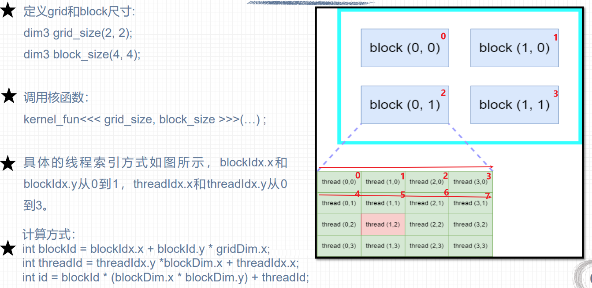
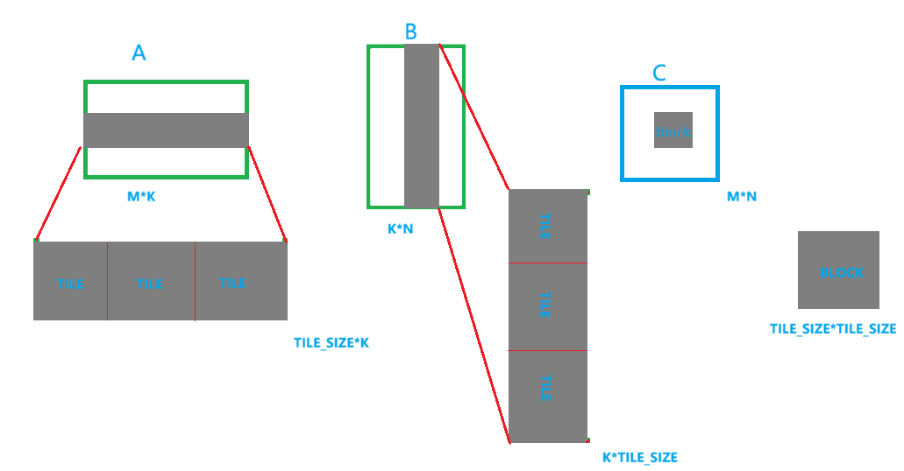
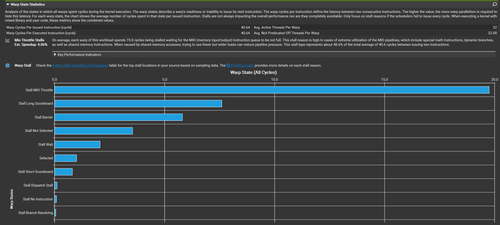
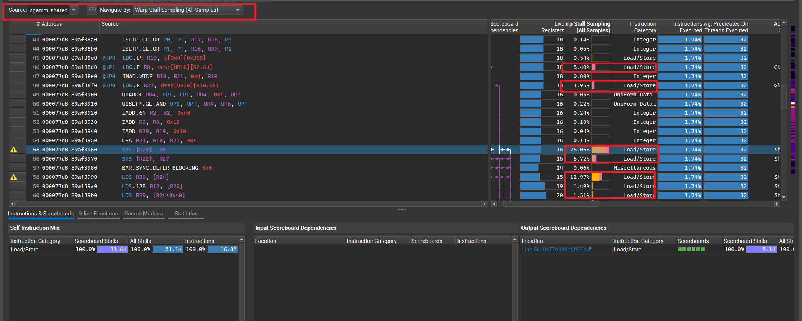

问题定义
SGEMM（单精度矩阵乘法）是指在单精度浮点数上下进行的矩阵乘法运算。
设矩阵均为 row-major：
$$
C_{M\times N}=A_{M\times K}B_{K\times N}
$$
其中：
$$
C_{ij}=\sum_{k=0}^{K-1}A_{ik}B_{kj}
$$
一个 SGEMM 一共大约执行：$2MNK$次 FLOP，因为每个 a*b+c 可以视为：
- 1 次乘法
- 1 次加法
例如：
1 | M=N=K=4096 |
总计算量：
$$
2\times4096^3\approx137.4\text{ GFLOP}
$$
假设 kernel 执行 1 ms：
$$
Performance=\frac{137.4GFLOP}{0.001s}=137.4TFLOPS
$$
因此之后测性能统一使用：
1 | gflops = 2.0 * M * N * K / time_seconds / 1e9; |
如何才能使得性能最大化，这是首要问题。
代码框架
1 |
|
二维网格 二维线程块

分析思路
1 | Duration / TFLOPS |
| 层级 | 类别 | 指标 / 概念 | 中文解释 | 含义 / 诊断价值 |
|---|---|---|---|---|
| 第一层 | 顶层入口 | Duration / TFLOPS |
程序运行总时间 / 理论浮点性能 | 宏观入口，通过与理论峰值对比，判断内核整体性能表现。 |
| 顶层分支 | Speed Of Light |
光速（理论性能峰值） | 当前GPU架构的理论计算或内存性能上限，用于衡量程序与峰值的差距。 | |
| 第二层 | 计算路径 (Compute) | Issue Slots Busy |
发射槽位忙碌率 | 每个周期Warp调度器发射指令的槽位被使用的百分比。低值说明调度器空转严重。 |
SM Busy |
SM（流式多处理器）忙碌率 | SM处于活跃状态（非空闲）的时间百分比。低值说明计算资源未被充分利用。 | ||
IPC |
每周期指令数 | 每个周期平均执行的指令数，直接反映计算吞吐量。 | ||
| 内存路径 (Memory) | DRAM / L2 / L1/TEX Throughput |
各级内存吞吐量 | 数据通过显存、二级缓存、一级/纹理缓存的传输速率，通常以峰值百分比表示。 | |
Mem Busy |
内存总线忙碌率 | 内存总线处于忙碌状态的时间百分比。 | ||
Max Bandwidth |
最大带宽利用率 | 当前内存吞吐量占理论最大带宽的百分比。若此指标高，程序为内存受限。 | ||
Mem Pipes Busy |
内存管道忙碌率 | 执行内存指令的流水线被利用的程度。 | ||
| 第三层 | 占用率与调度 | Occupancy |
占用率 | 每个SM上实际活跃Warp数与最大可能数量的比率，是隐藏延迟的前提。 |
Active Warps |
活跃线程束 | 当前在SM上处于活动状态的Warp数量。 | ||
| Scheduler | 调度器 | 每个周期从就绪的Warp中选择一个来发射指令的硬件单元。 | ||
Active → Eligible → Issued |
活跃 → 就绪 → 发射 | 指令发射路径。Warp必须同时活跃且就绪（Eligible）才会被选中发射。 | ||
| Eligible 太少？ | 就绪线程束过少 | 若大量周期无就绪Warp，说明程序为延迟受限，需分析具体停顿原因。 | ||
| 第四层 | Warp Stall (停顿原因) | Short Scoreboard |
短记分板停顿 | 等待短延迟、不离开SM的指令结果，如共享内存访问、特殊数学指令。 |
Long Scoreboard |
长记分板停顿 | 等待长延迟、可能离开SM的指令结果，如全局/局部内存访问。 | ||
MIO Throttle |
MIO节流停顿 | MIO单元（含共享内存、特殊数学指令）的指令队列已满，无法继续发射。 | ||
Math Throttle |
数学节流停顿 | 数学计算管道（如FMA、Tensor Core）的指令队列已满，无法继续发射。 | ||
Barrier |
屏障等待 | Warp在显式同步点（如__syncthreads()）上等待其他Warp。 |
||
Not Selected |
未被选中停顿 | Warp本身就绪，但当前周期未被调度器选中，常因活跃Warp过多导致竞争。 |
- 自上而下定位：先从
Speed Of Light判断是计算还是内存瓶颈。 - 深入分析：若计算/内存指标异常（如IPC低或带宽满），则进入
Occupancy和Scheduler层。 - 根因诊断：若发现
EligibleWarp过少，则在Warp Stall原因中查找对应的高频停顿项（如Long Scoreboard），并针对性优化（如合并内存访问、减少同步等）。
00-朴素实现
代码思路
和cpu计算方式一样，不考虑其他问题。
代码
1 | __global__ void cuda_sgemm_naive( |
性能分析
1 | ncu --section SpeedOfLight --section MemoryWorkloadAnalysis --section Lau |
1 | cuda_sgemm_naive(float *, float *, float *, int, int, int) (128, 128, 1)x(16, 16, 1), Context 1, Stream 7, Device 0, CC 12.0 |
Step1-Speed Of Light Throughput
判断瓶颈方向,内存还是计算？
1 | Memory Throughput % 95.35 |
- Compute Throughput：计算单元的忙碌程度
- Memory Throughput ：内存系统中所有部件工作负载最大值
- DRAM Throughput：访问显存的压力
结论：GPU计算单元使用不充分，但是某一级内存系统已经接近满负荷。
下一步：看是哪一级内存引起的，L1?L2?DRAM？
1 | L1/TEX Cache Throughput % 96.00 |
1 | SM |
Step2-Memory Workload Analysis
命中率
1 | L1/TEX Hit Rate % 87.27 |
可以发现，L2收到的请求，L2基本都可以找到，说明大量访存需求在L2这一层完成，导致L2的负载很大，而DRAM的负载很小。
Step3-kernel code Analysis
分析代码可以得到：
- 一个线程负责答案矩阵C中的一个元素计算
- 一个线程需要访问A的一行和B的一列
- sum存放在寄存器中，计算工程中线程不断对自己的寄存器内容累加。
- 循环结束后，线程访问C，写入答案
数据路径：
1 | A/B |
问题
对于同一个block（$16 \times 16$）的线程，如线程$(0,0)$和线程$(1,0)$，它们的$row$是相同的，线程$(0,0)$和线程$(0,1)$，它们的$col$是相同的。也就是说，一个block中的线程们会重复访问A和B的数据
即：
- 矩阵$A$的一行数据被同一行的多个线程重复使用
- 矩阵$B$的一列数据被同一列的多个线程重复使用
但我们当前的代码没有利用这个性质，只是粗鲁地进行一次又一次的访问然后在L2命中，使得L2负载很高。
因此，瓶颈在于：L2/request traffic bound，warp一直在等待数据
优化方向
一个从 Global Memory 加载进来的 A/B 元素，要让多个线程重复使用。
01-Shared Memory Tiling
沿着维度$K$分块，计算$C_{tile} = A_{tile} B_{tile}$
保存一个block中重复使用的数据，即A矩阵的tile行，B矩阵的tile列
我的错误想法
1 | template<int TILE> |
问题：
k是运行时参数，不能这样编写代码- 使用 dynamic shared memory 实现，
TILE*K也太大，共享内存放不下 - 存在重复搬运的问题
优化：
继续拆分，将$tile\times k$沿着维度k继续分块，即：
1 | C tile |
这样处理，既可以减少共享内存的使用，也可以让一个线程每次循环负责搬运一个位置，计算一个位置。

代码
1 | template<int TILE> |
更优雅的实现
1 | template<int TILE> |
优雅之处：
__restrict__告诉编译器这些指针不存在别名关系，有利于编译器优化
性能分析
本次实现由三个阶段组成：
1 | // 1. Global -> Shared |
NCU结果：
1 | [3565954] sgemm@127.0.0.1 |
Step1-Speed Of Light Throughput
1 | Memory Throughput 96.04% |
某个 SM 内部资源已经接近极限
Step2-Compute Workload
1 | Issue Slots Busy = 28.85% //有多少可用的 instruction issuing 能力真正被利用 |
并且NCU提示:
1 | All compute pipelines are under-utilized |
说明FP32 等计算 pipeline 没有充分利用
Step3-Memory Workload
1 | DRAM Throughput = 0.77% |
- DRAM Throughput = 0.77% 说明显存带宽十分空闲
- Mem Pipes Busy（发射 memory instruction 的相关 pipeline 有多忙） = 96.04% 说明SM 内部用于处理 memory instruction 的 pipeline 压力非常大
Step4-Occupancy
1 | Theoretical Occupancy = 100% |
可以排除wrap太少导致的pipeline空闲
1 | Occupancy 97.7% |
Step5-Scheduler Statistics
1 | Issued Warp Per Scheduler 0.29 |
SM中存在很多warp但是真正可以执行的warp很少,这也是Issue Slots Busy = 28.85%的原因，接下来要判断到底是什么原因导致可执行的warp少。
Step6-Warp State Statistics Warp Stall


stall主要在MIO(memeory input output)
综合判断
结合上述和代码可得：
1 | 大量 shared-memory instruction |
问题在于共享内存和寄存器之间的频繁load，导致warp中的线程处于等待状态